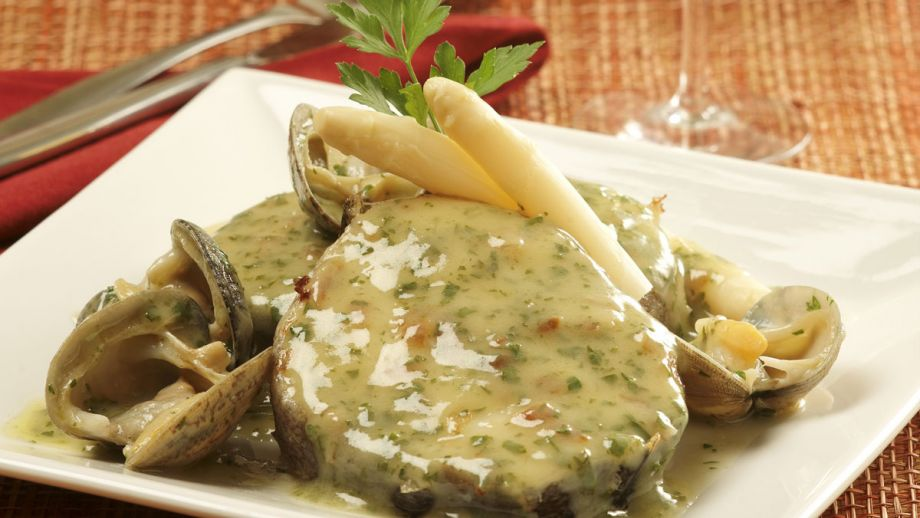
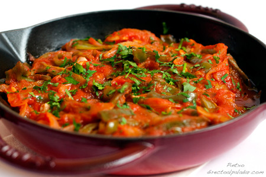
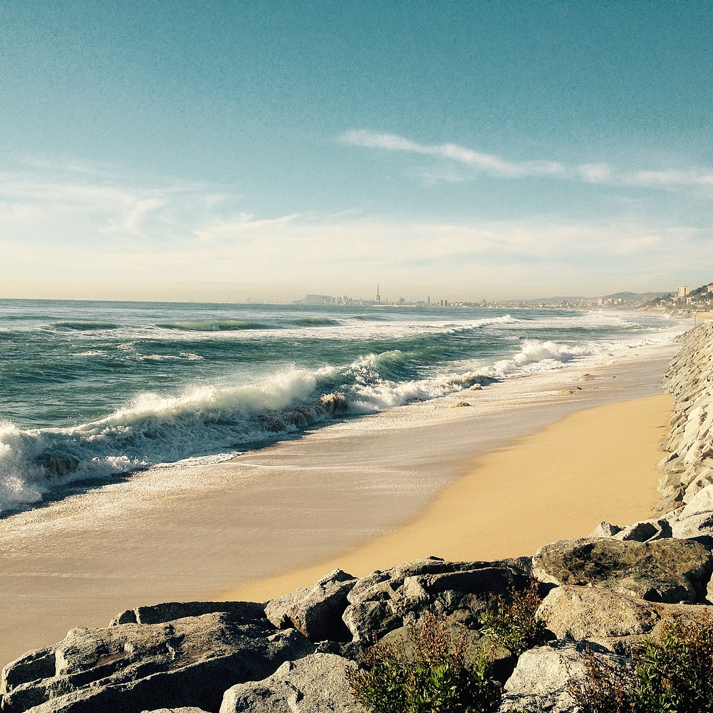

| Gastronomía | Restaurantes |  |
| Sedrerías y asadores | ||
| Bodegas de vino y txakoli |  | |
| Productos típicos | ||
| Escuelas de hotelería | ||
| Cultura | archivos y biblioteca | |
| museos | ||
| palacios de congresos | ||
| ferias de muestras | ||
| Ocio | Entrenamiento y diversión |  |
| Ocio cultural | ||
| Excursiones y deporte |